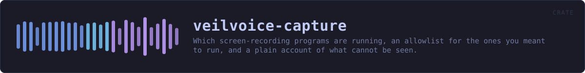

veilvoice-capture
Which screen-recording programs are running, an allowlist for the ones you meant to run, and a plain account of what cannot be seen.
reference · the same page on GitHub
Which screen-recording programs are running, an allowlist for the ones you meant to run, and a plain account of the two things this cannot do.
VeilVoice does not hide itself from your recorder
Stated first, because it is the question people actually have: you can record VeilVoice's window with OBS, and nothing here stops you. Screen capture of this application is not blocked, not degraded, and not detected as an attack. If you are making a video about VeilVoice, or streaming while you use it, it will appear on the recording exactly like any other window.
That is not only a choice, it is also a limit. Excluding a window from capture means SetWindowDisplayAffinity on Windows and the equivalent elsewhere, which is FFI — and every crate in this workspace carries #![forbid(unsafe_code)], which is a front-page claim. So the exclusion is not built, and ROADMAP.md records it as a decision waiting on the maintainer rather than as an oversight. Anybody who needs a window that cannot be recorded does not have it here, and should know that before they rely on it.
Telling you, and then not telling you again
A monitor that says "OBS is running" every thirty seconds while you deliberately record a tutorial is a monitor you turn off, and then it is not watching for the recorder you did not start. So Allowlist exists: name a program once, and it stops raising a notification.
Allowed is not hidden. Sighting::allowed is a flag on a sighting that is still in the report, and Report::all still lists it. Only Report::worth_saying filters, because that is the one a notification reads. Something that vanished from the interface entirely would be a setting for lying to yourself.
Running is not recording, and this crate never confuses them
Zoom being open does not mean Zoom is sharing your screen; Discord running does not mean anybody is watching. This reports what is running, and programs::Purpose separates a program whose job is recording from one that merely can. Every sentence produced here keeps the distinction, because a privacy tool that announces surveillance every time somebody opens a chat application has taught its user to ignore it.
Knowing whether a capture is actually in progress means asking the compositor who holds a capture session, and that is FFI on every platform here. Same trade, same answer, same place it is recorded.
And it only knows the programs it knows
programs::ALL is a table of names. Something not in it is not reported, and something written to record a screen quietly would not be called obs64.exe. An empty report is not evidence that nothing is recording, and SCOPE says so.
In plain words
This tells you which screen-recording programs are running.
If you are about to say something private and a recorder is going, that is worth knowing first. Programs you run on purpose can be marked as expected, and they stay in the list rather than disappearing from it.
It cannot hide VeilVoice's window from a recorder, and it does not pretend to. A camera pointed at the screen would not care anyway.
HOW THE CRATE FITS TOGETHER
Every arrow is a crate:: or super:: path one module actually uses, read out of the source rather than drawn by hand.
The same graph as Mermaid source
%%{init: {"theme":"base","themeVariables":{"background":"#1a1b26","primaryColor":"#1f2335","primaryTextColor":"#c0caf5","primaryBorderColor":"#7aa2f7","secondaryColor":"#16161e","tertiaryColor":"#16161e","lineColor":"#737aa2","textColor":"#c0caf5","mainBkg":"#1f2335","nodeBorder":"#7aa2f7","clusterBkg":"#16161e","clusterBorder":"#2f3549","fontFamily":"ui-monospace, SFMono-Regular, Consolas, monospace","fontSize":"14px"}}}%%
flowchart TD
n_lib(["lib.rs<br/>568 lines"])
n_processes["processes.rs<br/>255 lines"]
n_programs["programs.rs<br/>342 lines"]
n_processes --> n_programs
click n_lib href "https://github.com/tilas01/veilvoice/blob/main/crates/veilvoice-capture/src/lib.rs" "open the source"
click n_processes href "https://github.com/tilas01/veilvoice/blob/main/crates/veilvoice-capture/src/processes.rs" "open the source"
click n_programs href "https://github.com/tilas01/veilvoice/blob/main/crates/veilvoice-capture/src/programs.rs" "open the source"This site loads no third-party script, so it cannot run Mermaid; the diagram above is the same nodes and edges drawn by the generator instead. GitHub renders the source below directly.
THE FILES
| File | Lines | What it is |
|---|---|---|
lib.rs | 568 | Which screen-recording programs are running, an allowlist for the ones you meant to run, and a plain account of the two things this cannot do. |
processes.rs | 255 | Listing the processes that are running, per platform. |
programs.rs | 342 | The programs this build knows can capture a screen. |